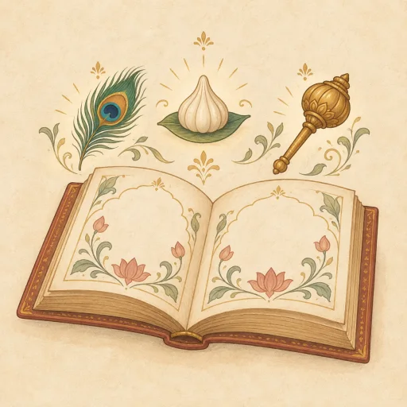

9:41●●● ▰
वेदांशA daily companion
FOR TODAY
A quiet moment for reading and reflection
CATEGORIES
देवताउद्देश्यदान-पुण्य
STORIES FOR KIDS

Stories for Kidsबच्चों की चित्र-कथाएँChoose a deity ›DISCOVER
Daily Practice
Choose a quiet moment for your daily practice.
HomeDaily BhaktiPanchangMore